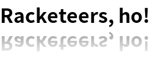

1 Overview
The racket/draw library provides a drawing API that is based on the PostScript drawing model. It supports line drawing, shape filling, bitmap copying, alpha blending, and affine transformations (i.e., scale, rotation, and translation).
See Classes and Objects for an introduction to classes and interfaces in Racket.
Drawing with racket/draw requires a drawing context (DC), which is an instance of the dc<%> interface. For example, the post-script-dc% class implements a dc<%> for drawing to a PostScript file, while bitmap-dc% draws to a bitmap. When using the racket/gui library for GUIs, the get-dc method of a canvas returns a dc<%> instance for drawing into the canvas window.
See Drawing in Canvases for an introduction to drawing in a GUI window.
1.1 Lines and Simple Shapes
To draw into a bitmap, first create the bitmap with make-bitmap, and then create a bitmap-dc% that draws into the new bitmap:
(define target (make-bitmap 30 30)) ; A 30x30 bitmap (define dc (new bitmap-dc% [bitmap target]))
Then, use methods like draw-line on the DC to draw into the bitmap. For example, the sequence
(send dc draw-rectangle 0 10 ; Top-left at (0, 10), 10 pixels down from top-left 30 10) ; 30 pixels wide and 10 pixels high (send dc draw-line 0 0 ; Start at (0, 0), the top-left corner 30 30) ; and draw to (30, 30), the bottom-right corner (send dc draw-line 0 30 ; Start at (0, 30), the bottom-left corner 30 0) ; and draw to (30, 0), the top-right corner
draws an “X” on top of a smaller rectangle into the bitmap target. If you save the bitmap to a file with (send target save-file "box.png" 'png), the "box.png" contains the image
in PNG format.
A line-drawing drawing operation like draw-line uses the DC’s current pen to draw the line. A pen has a color, line width, and style, where pen styles include 'solid, 'long-dash, and 'transparent. Enclosed-shape operations like draw-rectangle use both the current pen and the DC’s current brush. A brush has a color and style, where brush styles include 'solid, 'cross-hatch, and 'transparent.
In DrRacket, instead of saving target to a file viewing the image from the file, you can use (require racket/gui) and (make-object image-snip% target) to view the bitmap in the DrRacket interactions window.
For example, set the brush and pen before the drawing operations to draw a thick, red “X” on a green rectangle with a thin, blue border:
(send dc set-brush "green" 'solid) (send dc set-pen "blue" 1 'solid) (send dc draw-rectangle 0 10 30 10) (send dc set-pen "red" 3 'solid) (send dc draw-line 0 0 30 30) (send dc draw-line 0 30 30 0)
To draw a filled shape without an outline, set the pen to 'transparent mode (with any color and line width). For example,
(send dc set-pen "white" 1 'transparent) (send dc set-brush "black" 'solid) (send dc draw-ellipse 5 5 20 20)
By default, a bitmap-dc% draws solid pixels without smoothing the boundaries of shapes. To enable smoothing, set the smoothing mode to either 'smoothed or 'aligned:
(send dc set-smoothing 'aligned) (send dc set-brush "black" 'solid) (send dc draw-ellipse 4 4 22 22) ; a little bigger
The difference between 'aligned mode and 'smoothed mode is related to the relatively coarse granularity of pixels in a bitmap. Conceptually, drawing coordinates correspond to the lines between pixels, and the pen is centered on the line. In 'smoothed mode, drawing on a line causes the pen to draw at half strength on either side of the line, which produces the following result for a 1-pixel black pen:
but 'aligned mode shifts drawing coordinates to make the pen fall on whole pixels, so a 1-pixel black pen draws a single line of pixels:
1.2 Pen, Brush, and Color Objects
The set-pen and set-brush methods of a DC accept pen% and brush% objects, which group together pen and brush settings.
(require racket/math) (define no-pen (new pen% [style 'transparent])) (define no-brush (new brush% [style 'transparent])) (define blue-brush (new brush% [color "blue"])) (define yellow-brush (new brush% [color "yellow"])) (define red-pen (new pen% [color "red"] [width 2])) (define (draw-face dc) (send dc set-smoothing 'aligned) (send dc set-pen no-pen) (send dc set-brush blue-brush) (send dc draw-ellipse 25 25 100 100) (send dc set-brush yellow-brush) (send dc draw-rectangle 50 50 10 10) (send dc draw-rectangle 90 50 10 10) (send dc set-brush no-brush) (send dc set-pen red-pen) (send dc draw-arc 37 37 75 75 (* 5/4 pi) (* 7/4 pi))) (define target (make-bitmap 150 150)) (define dc (new bitmap-dc% [bitmap target])) (draw-face dc)
The get-pen and get-brush methods return a DC’s current pen and brush, so they can be restored after changing them temporarily for drawing.
Besides grouping settings, a pen% or brush% object includes extra settings that are not available by using set-pen or set-brush directly. For example, a pen or brush can have a stipple, which is a bitmap that is used instead of a solid color when drawing. For example, if "water.png" has the image
then it can be loaded with read-bitmap and installed as the stipple for blue-brush:
(send blue-brush set-stipple (read-bitmap "water.png")) (send dc erase) (draw-face dc)
Along similar lines, a color% object lets you specify a color through its red, green, and blue components instead of a built-in color name. Due to the way that color% initialization is overloaded, use make-object instead of new to instantiate color%, or use the make-color function:
(define red-pen (new pen% [color (make-color 200 100 150)] [width 2])) (send dc erase) (draw-face dc)

1.3 Transformations
Any coordinates or lengths supplied to drawing commends are transformed by a DC’s current transformation matrix. The transformation matrix can scale an image, draw it at an offset, or rotate all drawing. The transformation can be set directly, or the current transformation can be transformed further with methods like scale, translate, or rotate:
(send dc erase) (send dc scale 0.5 0.5) (draw-face dc) (send dc rotate (/ pi 2)) (send dc translate 0 150) (draw-face dc) (send dc translate 0 -150) (send dc rotate (/ pi 2)) (send dc translate 150 150) (draw-face dc) (send dc translate -150 -150) (send dc rotate (/ pi 2)) (send dc translate 150 0) (draw-face dc)
Use the get-transformation method to get a DC’s current transformation, and restore a saved transformation (or any affine transformation) using set-transformation.

1.4 Drawing Paths
Drawing functions like draw-line and draw-rectangle
are actually convenience functions for the more general
draw-path operation. The draw-path operation takes
a path, which describes a set of line segments and curves
to draw with the pen and—
An instance of dc-path% holds a path. Conceptually, a path has a current pen position that is manipulated by methods like move-to, line-to, and curve-to. The move-to method starts a sub-path, and line-to and curve-to extend it. The close method moves the pen from its current position in a straight line to its starting position, completing the sub-path and forming a closed path that can be filled with the brush. A dc-path% object can have multiple closed sub-paths and one final open path, where the open path is drawn only with the pen.
For example,
(define zee (new dc-path%)) (send zee move-to 0 0) (send zee line-to 30 0) (send zee line-to 0 30) (send zee line-to 30 30)
creates an open path. Drawing this path with a black pen of width 5 and a transparent brush produces
Drawing a single path with three line segments is not the same as drawing three separate lines. When multiple line segments are drawn at once, the corner from one line to the next is shaped according to the pen’s join style. The image above uses the default 'round join style. With 'miter, line lines are joined with sharp corners:
If the sub-path in zee is closed with close, then all of the corners are joined, including the corner at the initial point:
(send zee close)
Using blue-brush instead of a transparent brush causes the interior of the path to be filled:
When a sub-path is not closed, it is implicitly closed for brush filling, but left open for pen drawing. When both a pen and brush are available (i.e., not transparent), then the brush is used first, so that the pen draws on top of the brush.
At this point we can’t resist showing an extended example using dc-path% to draw the Racket logo:
(define red-brush (new brush% [stipple (read-bitmap "fire.png")])) (define left-lambda-path (let ([p (new dc-path%)]) (send p move-to 153 44) (send p line-to 161.5 60) (send p curve-to 202.5 49 230 42 245 61) (send p curve-to 280.06 105.41 287.5 141 296.5 186) (send p curve-to 301.12 209.08 299.11 223.38 293.96 244) (send p curve-to 281.34 294.54 259.18 331.61 233.5 375) (send p curve-to 198.21 434.63 164.68 505.6 125.5 564) (send p line-to 135 572) p)) (define left-logo-path (let ([p (new dc-path%)]) (send p append left-lambda-path) (send p arc 0 0 630 630 (* 47/72 2 pi) (* 121/360 2 pi) #f) p)) (define bottom-lambda-path (let ([p (new dc-path%)]) (send p move-to 135 572) (send p line-to 188.5 564) (send p curve-to 208.5 517 230.91 465.21 251 420) (send p curve-to 267 384 278.5 348 296.5 312) (send p curve-to 301.01 302.98 318 258 329 274) (send p curve-to 338.89 288.39 351 314 358 332) (send p curve-to 377.28 381.58 395.57 429.61 414 477) (send p curve-to 428 513 436.5 540 449.5 573) (send p line-to 465 580) (send p line-to 529 545) p)) (define bottom-logo-path (let ([p (new dc-path%)]) (send p append bottom-lambda-path) (send p arc 0 0 630 630 (* 157/180 2 pi) (* 47/72 2 pi) #f) p)) (define right-lambda-path (let ([p (new dc-path%)]) (send p move-to 153 44) (send p curve-to 192.21 30.69 233.21 14.23 275 20) (send p curve-to 328.6 27.4 350.23 103.08 364 151) (send p curve-to 378.75 202.32 400.5 244 418 294) (send p curve-to 446.56 375.6 494.5 456 530.5 537) (send p line-to 529 545) p)) (define right-logo-path (let ([p (new dc-path%)]) (send p append right-lambda-path) (send p arc 0 0 630 630 (* 157/180 2 pi) (* 121/360 2 pi) #t) p)) (define lambda-path (let ([p (new dc-path%)]) (send p append left-lambda-path) (send p append bottom-lambda-path) (let ([t (new dc-path%)]) (send t append right-lambda-path) (send t reverse) (send p append t)) (send p close) p)) (define (paint-racket dc) (send dc set-pen "black" 0 'transparent) (send dc set-brush "white" 'solid) (send dc draw-path lambda-path) (send dc set-pen "black" 4 'solid) (send dc set-brush red-brush) (send dc draw-path left-logo-path) (send dc draw-path bottom-logo-path) (send dc set-brush blue-brush) (send dc draw-path right-logo-path)) (define racket-logo (make-bitmap 170 170)) (define dc (new bitmap-dc% [bitmap racket-logo])) (send dc set-smoothing 'smoothed) (send dc translate 5 5) (send dc scale 0.25 0.25) (paint-racket dc)

In addition to the core move-to, line-to, curve-to, and close methods, a dc-path% includes many convenience methods, such as ellipse for adding a closed elliptical sub-path to the path.
1.5 Text
Draw text using the draw-text method, which takes a string to draw and a location for the top-left of the drawn text:
(define text-target (make-bitmap 100 30)) (define dc (new bitmap-dc% [bitmap text-target])) (send dc set-brush "white" 'transparent) (send dc draw-rectangle 0 0 100 30) (send dc draw-text "Hello, World!" 5 1)
The font used to draw text is determined by the DC’s current font. A font is described by a font% object and installed with set-font. The color of drawn text which is separate from either the pen or brush, can be set using set-text-foreground.
(send dc erase) (send dc set-font (make-font #:size 14 #:family 'roman #:weight 'bold)) (send dc set-text-foreground "blue") (send dc draw-rectangle 0 0 100 30) (send dc draw-text "Hello, World!" 5 1)
To compute the size that will be used by drawn text, use get-text-extent, which returns four values: the total width, total height, difference between the baseline and total height, and extra space (if any) above the text in a line. For example, the result of get-text-extent can be used to position text within the center of a box:
(send dc erase) (send dc draw-rectangle 0 0 100 30) (define-values (w h d a) (send dc get-text-extent "Hello, World!")) (send dc draw-text "Hello, World!" (/ (- 100 w) 2) (/ (- 30 h) 2))
1.6 Alpha Channels and Alpha Blending
When you create or erase a bitmap, the content is nothing. “Nothing” isn’t the same as white; it’s the absence of drawing. For example, if you take text-target from the previous section and copy it onto another DC using draw-bitmap, then the black rectangle and blue text is transferred, and the background is left alone:
(define new-target (make-bitmap 100 30)) (define dc (new bitmap-dc% [bitmap new-target])) (send dc set-pen "black" 1 'transparent) (send dc set-brush "pink" 'solid) (send dc draw-rectangle 0 0 100 30) (send dc draw-bitmap text-target 0 0)
The information about which pixels of a bitmap are drawn (as opposed to “nothing”) is the bitmap’s alpha channel. Not all DCs keep an alpha channel, but bitmaps created with make-bitmap keep an alpha channel by default. Bitmaps loaded with read-bitmap preserve transparency in the image file through the bitmap’s alpha channel.
An alpha channel isn’t all or nothing. When the edges text is anti-aliased by draw-text, for example, the pixels are partially transparent. When the pixels are transferred to another DC, the partially transparent pixel is blended with the target pixel in a process called alpha blending. Furthermore, a DC has an alpha value that is applied to all drawing operations; an alpha value of 1.0 corresponds to solid drawing, an alpha value of 0.0 makes the drawing have no effect, and values in between make the drawing translucent.
For example, setting the DC’s alpha to 0.25 before calling draw-bitmap causes the blue and black of the “Hello, World!” bitmap to be quarter strength as it is blended with the destination image:
(send dc erase) (send dc draw-rectangle 0 0 100 30) (send dc set-alpha 0.25) (send dc draw-bitmap text-target 0 0)
1.7 Clipping
In addition to tempering the opacity of drawing operations, a DC has a clipping region that constrains all drawing to inside the region. In the simplest case, a clipping region corresponds to a closed path, but it can also be the union, intersection, subtraction, or exclusive-or of two paths.
For example, a clipping region could be set to three circles to clip the drawing of a rectangle (with the 0.25 alpha still in effect):
(define r (new region%)) (let ([p (new dc-path%)]) (send p ellipse 0 0 35 30) (send p ellipse 35 0 30 30) (send p ellipse 65 0 35 30) (send r set-path p)) (send dc set-clipping-region r) (send dc set-brush "green" 'solid) (send dc draw-rectangle 0 0 100 30)
The clipping region can be viewed as a convenient alternative to path filling or drawing with stipples. Conversely, stippled drawing can be viewed as a convenience alternative to clipping repeated calls of draw-bitmap.
Combining regions with pen% objects that have gradients, however, is more than just a convenience, as it allows us to draw shapes in combinations we could not otherwise draw. To illustrate, here is some code that draws text with its reflection below it.
; First compute the size of the text we're going to draw, ; using a small bitmap that we never draw into. (define bdc (new bitmap-dc% [bitmap (make-bitmap 1 1)])) (define str "Racketeers, ho!") (define the-font (make-font #:size 24 #:family 'swiss #:weight 'bold)) (define-values (tw th) (let-values ([(tw th ta td) (send dc get-text-extent str the-font)]) (values (inexact->exact (ceiling tw)) (inexact->exact (ceiling th))))) ; Now we can create a correctly sized bitmap to ; actually draw into and enable smoothing. (send bdc set-bitmap (make-bitmap tw (* th 2))) (send bdc set-smoothing 'smoothed) ; next, build a path that contains the outline of the text (define upper-path (new dc-path%)) (send upper-path text-outline the-font str 0 0) ; next, build a path that contains the mirror image ; outline of the text (define lower-path (new dc-path%)) (send lower-path text-outline the-font str 0 0) (send lower-path transform (vector 1 0 0 -1 0 0)) (send lower-path translate 0 (* 2 th)) ; This helper accepts a path, sets the clipping region ; of bdc to be the path (but in region form), and then ; draws a big rectangle over the whole bitmap. ; The brush will be set differently before each call to ; draw-path, in order to draw the text and then to draw ; the shadow. (define (draw-path path) (define rgn (new region%)) (send rgn set-path path) (send bdc set-clipping-region rgn) (send bdc set-pen "white" 1 'transparent) (send bdc draw-rectangle 0 0 tw (* th 2)) (send bdc set-clipping-region #f)) ; Now we just draw the upper-path with a solid brush (send bdc set-brush "black" 'solid) (draw-path upper-path) ; To draw the shadow, we set up a brush that has a ; linear gradient over the portion of the bitmap ; where the shadow goes (define stops (list (list 0 (make-color 0 0 0 0.4)) (list 1 (make-color 0 0 0 0.0)))) (send bdc set-brush (new brush% [gradient (new linear-gradient% [x0 0] [y0 th] [x1 0] [y1 (* th 2)] [stops stops])])) (draw-path lower-path)
And now the bitmap in bdc has “Racketeers, ho!” with a mirrored version below it.

1.8 Portability and Bitmap Variants
Drawing effects are not completely portable across platforms, across different classes that implement dc<%>, or different kinds of bitmaps. Fonts and text, especially, can vary across platforms and types of DC, but so can the precise set of pixels touched by drawing a line.
Different kinds of bitmaps can produce different results:
Drawing to a bitmap produced by make-bitmap (or instantiated from bitmap%) draws in the most consistent way across platforms.
Drawing to a bitmap produced by make-platform-bitmap uses platform-specific drawing operations as much as possible. On Windows, however, a bitmap produced by make-platform-bitmap has no alpha channel, and it uses more constrained resources than one produced by make-bitmap (due to a system-wide, per-process GDI limit).
As an example of platform-specific difference, text is smoothed by default with sub-pixel anti-aliasing on Mac OS, while text smoothing in a make-bitmap result uses only grays. Line or curve drawing may touch different pixels than in a bitmap produced by make-bitmap, and bitmap scaling may differ.
A possible approach to dealing with the GDI limit under Windows is to draw into the result of a make-platform-bitmap and then copy the contents of the drawing into the result of a make-bitmap. This approach preserves the drawing results of make-platform-bitmap, but it retains constrained resources only during the drawing process.
Drawing to a bitmap produced by make-screen-bitmap from racket/gui/base uses the same platform-specific drawing operations as drawing into a canvas% instance. A bitmap produced by make-screen-bitmap uses the same platform-specific drawing as make-platform-bitmap on Windows or Mac OS, but possibly scaled, and it may be scaled or sensitive to the X11 server on Unix.
On Mac OS, when the main screen is in Retina mode (at the time that the bitmap is created), the bitmap is also internally scaled so that one drawing unit uses two pixels. Similarly, on Windows or Unix, when the main display’s text scale is configured at the operating-system level (see Screen Resolution and Text Scaling), the bitmap is internally scaled, where common configurations map a drawing unit to 1.25, 1.5, or 2 pixels.
Use make-screen-bitmap when drawing to a bitmap as an offscreen buffer before transferring an image to the screen, or when consistency with screen drawing is needed for some other reason.
A bitmap produced by make-bitmap in canvas% from racket/gui/base is like a bitmap from make-screen-bitmap, but on Mac OS, the bitmap is optimized for drawing to the screen (by taking advantage of system APIs that can, in turn, take advantage of graphics hardware).
Use make-bitmap in canvas% for similar purposes as make-screen-bitmap, particularly when the bitmap will be drawn later to a known target canvas.